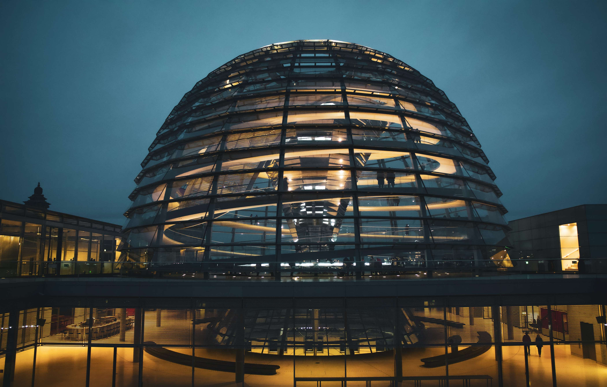

It is one of the best places in Berlin for live concerts and stand-up comedy throughout the year. Its design resembles a circus-style tent with dining and a terrace bar.
Duration 1hr 30mins

Sail on the waters of the river Spree while enjoying a pleasant dinner and admiring the city's most symbolic buildings with this Berlin Dinner Cruise.
Duration 2hr 30mins

This is a wider card with supporting text below as a natural lead-in to additional content. This content is a little bit longer.
Duration: unlimited
Experience a culinary journey through 50 years of Berlin. The revolving restaurant in the berlin TV tower offers culinary pleasure, history and a 360° PANORAMIC VIEW, MERGED INTO AN UNFORGETTABLE EXPERIENCE AT 207 M. EVERY FIRST SUNDAY OF THE MONTH WE OFFER A LARGE BREAKFAST BUFFET FROM 9 TO 11.30 AM.
Duration: 2hr
The Museum Island is a museum complex on the northern part of the Spree Island in the historic heart of Berlin. It is one of the most visited sights of Germany's capital and one of the most important museum sites in Europe.
Duration 3hr
Every year in Fall Berlin becomes the city of light art. The light productions on the world-famous landmarks, monuments, buildings and squares of the German capital make the FESTIVAL OF LIGHTS one of the most popular light art festivals in the world.
Duration: aprox. 2hr